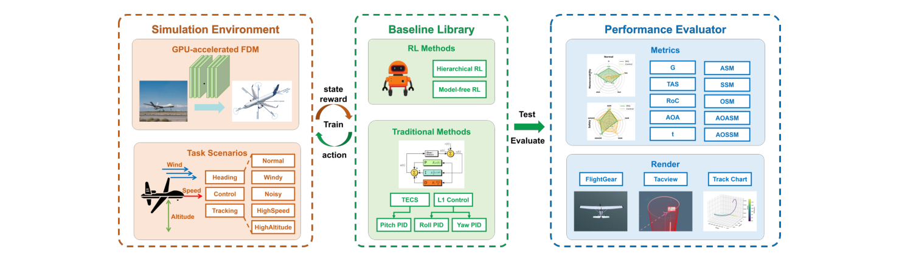
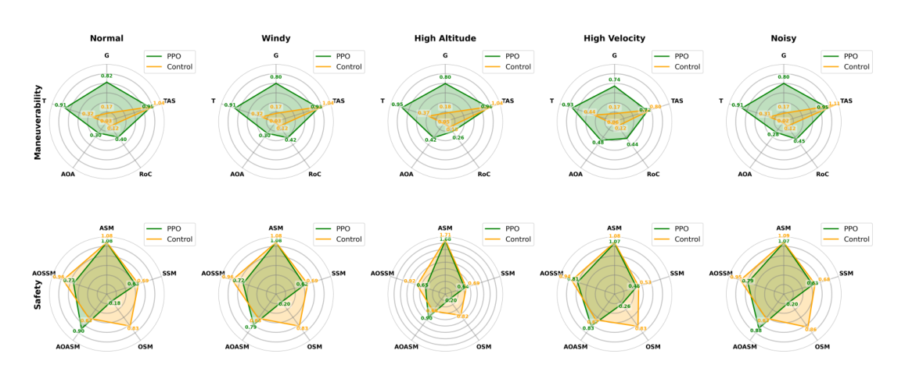
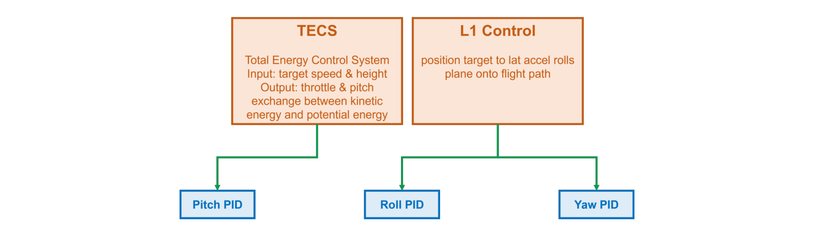
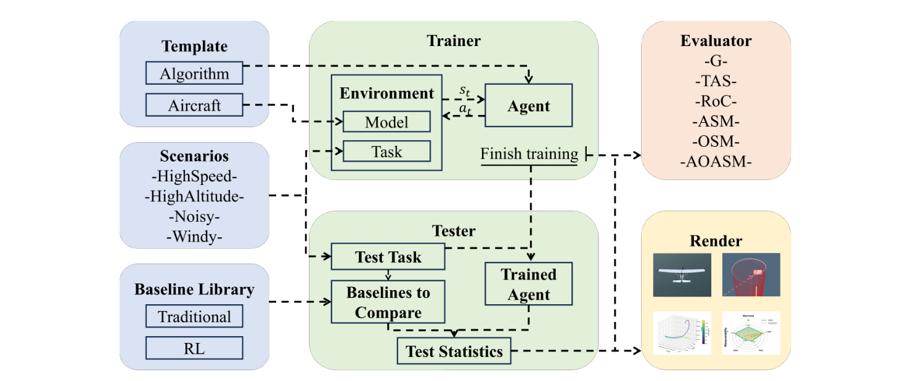

| 论文标题 | NeuralPlane: An Efficiently Parallelizable Platform for Fixed-wing Aircraft Control with Reinforcement Learning （NeuralPlane：一个可高效并行化的固定翼飞行器强化学习控制平台） |
| 作者 | Chuanyi Xue*、Qihan Liu*、Xiaoteng Ma*、Yang Qi、Xinyao Qin、Yuhua Jiang、Ning Gui、Jinsheng Ren、Bin Liang、Jun Yang†（通讯作者）；* 表示三位作者贡献相同（equal contribution） |
| 单位 | 清华大学自动化系（Department of Automation, Tsinghua University），全部作者同一单位 |
| 发表信息 | NeurIPS 2024，Datasets and Benchmarks Track（第 38 届神经信息处理系统大会 · 数据集与基准赛道）。资助：National Science and Technology Innovation 2030 - Major Project（Grant No. 2022ZD0208804） |
| 篇幅与材料 | 正文 9 页（Introduction / Related Work / Design and Resources / Benchmarking Study / Conclusion），附录 A–C 共 10 页，合计 24 页；含 15 张图、8 张表、3 段伪代码（Algorithm 1–3）与 NeurIPS checklist；开源仓库含 4 类环境（Control / Planning / SingleCombat / MultiCombat）、5 份任务 yaml、2 套机型实现（F16 / UAV）与 PPO / MAPPO / PID 三套算法 |
| 代码仓库 | github.com/xuecy22/NeuralPlane（本地已完整 clone 于本目录，含 envs/、algorithms/、scripts/、renders/ 等） |
| 本地 PDF | NeuralPlane_NeurIPS2024.pdf（24 页，Camera-ready 版）；同目录另有早期版本 neuralplane.pdf |
| DOI / 链接 | 论文正文与 PDF 未给出 DOI 或 arXiv 编号，正式引用形式为 Advances in Neural Information Processing Systems 37 (NeurIPS 2024), Datasets and Benchmarks Track；可访问入口为上方 GitHub 仓库与本地 PDF |
| 一句话摘要 | 提出 NeuralPlane——首个面向固定翼飞行器大规模并行仿真的强化学习基准平台。其核心是把 6-DoF 飞行动力学模型（FDM）从"CPU 标量程序 + 气动查表"重写为"GPU 张量批处理 + MLP 气动代理"：状态、控制、气动系数全部以 [N, ·] 张量存放，约 40 张气动系数表被蒸馏成小 MLP，从而用批量维替代进程维；在 106 架飞机并行时单步仿真仅 0.2 s（对应 10 s 飞行段约 105 s 墙钟，仓库实测数据）。平台同时提供 3 类任务目标 × 4 类飞行条件、RL 与传统控制两套基线、15 项机动性/安全性指标与 3 种可视化回放，并用 PPO 在 F16 上验证了"大规模并行是收敛前提"这一结论（n=32/256 不收敛，n=3000 约 100 轮迭代、约 1 天收敛，成功率 >95%）。 |
s、控制 u 不再是"一架飞机的 12 维向量"，而是 [N, 12]、[N, 5] 的张量；N 架飞机在同一次 kernel 里推进，环境数不再与 CPU 核数绑定。| 灵感来源 | → 启发了什么 | 类型 |
|---|---|---|
| Isaac Gym [63, 64]：把刚体物理搬上 GPU，用成千上万个并行环境训练机器人策略 | → 并行的单位应该是"张量里的一个 batch 元素"，而不是"操作系统里的一个进程"。这条原则与"飞机是不是刚体"无关，只与"动力学能否写成无分支张量运算"有关——于是问题被重新表述为：如何把气动查表变成无分支张量运算？ | 架构 |
| JSBSim 的 F-16 公开气动数据表（hifi_F16_AeroData，源自公开的风洞/CFD 数据集） | → 表里装的是领域知识，插值只是读取方式。既然知识是"函数"，就可以用函数逼近器（MLP）承载，把读取方式从"分支 + gather"换成"矩阵乘"。数据表因此从"运行时资产"降级为"离线训练集"。 | 方法 |
| ArduPilot 的 TECS + L1 + 双环 PID 级联控制结构 | → 传统基线不必自己发明，直接移植到同一环境、同一观测、同一指标下，才能回答"RL 到底强在哪、弱在哪"。论文因此得到了一个诚实结论：机动性 RL 全面胜出，安全性传统方法略优。 | 评测 |
| CloseAirCombat [71]（作者前作：Gym 封装 + PPO + 自博弈空战环境） | → 代码骨架可复用：env_base.py 的三掩码（done / bad_done / exceed_time_limit）、GPUVecEnv 的单实例包装、PPO 的 GRU 策略与 GAE 实现，都是前作直接继承。本文的增量集中在"FDM 张量化 + MLP 气动代理 + 基准套件"。 | 工程 |
| GPUDrive [65]（106 FPS）、Waymax [66]、Pgx [67]（比 Python 实现快 10–100 倍） | → "平台论文"的叙事范式：以吞吐曲线为主图（Fig. 1 的左/右两幅 log-log 图）、以"任务矩阵 + 基线对比"为贡献、以开源仓库为交付物。NeuralPlane 的贡献声明几乎是这一范式的逐条复刻。 | 写作 |
| NeurIPS Datasets & Benchmarks Track 的评审口径 | → 必须交付可复现脚本（scripts/train_*.sh）、许可证清单（Table 8：PPO/CloseAirCombat LGPL-3.0、ArduPilot LGPL-3.0、JSBSim LGPL-2.1）、checklist 与误差棒，否则"平台"主张不成立。 | 写作 |
论文用 Table 1 做了四维打勾对比，这张表是理解本文定位的最短路径。四个维度分别是：FDM 计算（是否真的解飞行动力学方程，而非质点运动学）、Headless 模式（能否无渲染运行，决定能否用于训练而非仅测试）、RL 集成（是否提供 Gym 式接口与算法实现）、GPU 加速（并行是否走 GPU）。
| 平台 | FDM 计算 | Headless | RL 集成 | GPU 加速 | 关键短板（据论文 Related Work） |
|---|---|---|---|---|---|
| XPlane [20] | ✓ | ✗ | ✗ | ✗ | 商业闭源、需实时渲染游戏 + UDP 连接器（XPlaneConnect），无 headless，只适合测试不适合训练 |
| ArduPilot [22] | ✓ | ✓ | ✗ | ✗ | 本质是自驾仪固件，主要面向多旋翼遥控/自驾，接 RL 需额外适配 |
| JSBSim [21] | ✓ | ✓ | ✗ | ✗ | 开源高保真、可接 FlightGear，但 FDM 为 CPU 实现，无 GPU 加速，并行能力受限 |
| QPlane [23] | ✗（复用 XPlane/JSBSim） | ✓ | ✓ | ✗ | 首个固定翼 RL 工具箱，提供标准 Gym 接口，但并行瓶颈继承自 JSBSim |
| MaCA [19] | ✗（质点） | ✓ | ✓ | ✗ | 把飞行当质点处理，没有真正的 FDM，多智能体协同任务失真 |
| NeuralPlane（本文） | ✓ | ✓ | ✓ | ✓ | 唯一四项全勾；论文称"首个支持 GPU 加速大规模并行的固定翼 RL 平台" |
[N,12]、[N,5]）；13 个耦合非线性 ODE 用 torchdiffeq.odeint（method='euler'、dt=0.02）在 GPU 上批量积分；约 40 个气动系数表各用一个 3→20→10→1 的 MLP 替代插值。在 106 并行时单步 0.2 s，仓库 envs/measure_env/*.npy 的实测数据表明同一 10 s 飞行段 JSBSim 需 22921 s，加速约 218×。--n-rollout-threads（32 / 256 / 3000），给出三条训练曲线：n=32 与 n=256 不收敛且回报剧烈震荡，n=3000 在约 100 轮迭代内稳定收敛（约 1 天，单张 A100 80GB）。这个消融把"平台贡献"从工程叙事提升为可证伪的科学主张。论文 Fig. 2（本地 figures/fig1.png）把平台画成三个横向并列的模块：仿真环境（GPU 加速 FDM + 任务场景）、基线库（RL 方法 + 传统方法）、性能评测器（指标 + 渲染）。三者之间的箭头只有两组：环境与基线之间是 state / reward 与 action 的双向闭环（标注 "Train"），基线到评测器是单向的 "Test / Evaluate"。这个拓扑说明了一个设计取向：平台把"训练"当作环境与算法的私事，把"评测"当作独立的第三方裁判——算法只能通过 env.step() 接触世界，评测器只能通过飞行数据接触算法，二者不共享内部状态。这正是 benchmark 与"某篇论文的实验代码"的分界线。
flowchart TB
subgraph SIM["🌍 仿真环境（批量张量 · 单进程）"]
AERO["气动系数 MLP 代理 · 约 40 个
3→20→10→1 · 测试集 R² ≥ 0.9926"]
FDM["6-DoF 飞行动力学 · 13 状态耦合 ODE
torchdiffeq euler · dt = 0.02 s"]
MODEL["机型封装 F16 / UAV
状态张量 N×12 · 控制张量 N×5"]
TASK["任务层 Heading / Control / Tracking
目标采样 + 22 维观测 + 奖励"]
TERM["终止判定 6 类
极端状态 / 高速 / 低空 / 低速 / 过载 / 到达"]
end
subgraph BASE["🧠 基线库"]
RL["RL 方法
PPO（MLP 128-128 + GRU 128）· 分层 PPO"]
TRAD["传统方法
TECS + L1 制导 + 双环 PID"]
end
subgraph EVAL["📊 性能评测器"]
MET["15 项指标
机动性 9 项 · 安全性 6 项"]
REN["3 种可视化
FlightGear · Tacview · 轨迹图"]
end
subgraph PIPE["🔁 训练 / 测试 / 评测流水线"]
VEC["GPUVecEnv
单实例包装 · 张量进出"]
RUN["F16SimRunner
3000 并行 × 3000 步 / 轮"]
LOG["Logger + TensorBoard
runs/时间戳_环境_场景_机型_算法"]
end
AERO --> FDM
MODEL --> FDM
FDM --> TASK
TASK --> TERM
TERM --> VEC
VEC --> RUN
RUN --> RL
RL -->|"动作 a_t（4 维）"| MODEL
RUN --> LOG
RUN -->|"训练完成 · 导出权重"| MET
TRAD --> MET
MET --> REN
classDef sim fill:#e8f0fe,stroke:#3b82f6,stroke-width:2px,color:#1d4ed8
classDef base fill:#e6f7ee,stroke:#10b981,stroke-width:2px,color:#047857
classDef evalfill fill:#fef7ed,stroke:#f59e0b,stroke-width:2px,color:#92400e
classDef pipe fill:#f0ebfd,stroke:#8b5cf6,stroke-width:2px,color:#6d28d9
class AERO,FDM,MODEL,TASK,TERM sim
class RL,TRAD base
class MET,REN evalfill
class VEC,RUN,LOG pipe
传统 Gym 环境的并行写法是 SubprocVecEnv([make_env(i) for i in range(n)])——n 个进程、n 份 Python 解释器、n 次 IPC。NeuralPlane 把这条路彻底掐断：envs/env_wrappers.py 里的 GPUVecEnv 在构造时 assert len(env_fns) == 1，即只允许创建一个环境实例；这个实例内部持有 n = num_agents × num_envs 个并行体的全部状态。于是"并行"被降维成"张量的第 0 维"，进程数恒为 1。
| 文件 | 行数 | 职责与关键实现 |
|---|---|---|
envs/env_base.py | 151 | 抽象环境基类 BaseEnv(gym.Env)。构造时 n = num_agents * num_envs，分配 step_count、is_done、bad_done、exceed_time_limit 四个长度 n 的掩码张量；step() 的顺序是 reset() → model.update(action) → step_count += 1 → obs() → done() → reward()。注意 reset() 在每步开头调用，靠掩码只重置已结束的槽位——这是"零 Python 分支地实现自动重置"的关键技巧。 |
envs/control_env.py | 36 | 薄壳工厂：按 model ∈ {F16, UAV} 与 config ∈ {heading, control, tracking} 组合出 F16Model/UAVModel + HeadingTask/ControlTask/TrackingTask。机型与任务是正交的两个维度。 |
envs/env_wrappers.py | 124 | GPUVecEnv：把张量环境包装成"看起来像 VecEnv"的接口，step() 把 (N·M, A) 的 numpy 动作转成 GPU 张量，输出再 reshape 回 (N, M, ·)。它是"单实例多并体"与"外部多线程采样器"之间的适配层。 |
envs/models/F16_model.py | 198 | 机型封装：维护 s[N,12]、u[N,5]、recent_s、recent_u；update() 先做动作到舵面的一阶滞后映射，再调 odeint 走一个 dt；并提供 30 余个取数接口（get_G、get_accels、get_EAS2TAS、get_atmos…）供任务层与指标层调用。 |
envs/models/UAV_model.py | — | 小型无人机机型，与 F16 共享同一套接口，用于验证"换机型不改算法"。 |
envs/models/model_base.py | 251 | 抽象机型基类，定义 20 余个 @abstractmethod 取数接口。新增机型 = 实现这些接口，这是论文所说"清晰接口、便于接入自有模型"的落点。 |
envs/models/F16/F16_dynamics.py（229 行）是全文的技术心脏：一个 nn.Module，forward(t, x) 直接返回 xdot，因此可以被 torchdiffeq 当作 ODE 右端函数批量积分。它承接的是 F-16 的 12 状态模型（位置 3 + 欧拉角 3 + 真空速 + α + β + 机体角速率 3），控制 5 维（推力 T 与升降舵、副翼、方向舵、前缘襟翼）。
气动部分在 envs/models/F16/hifi_F16_AeroData.py（819 行）里：构造时加载 40 个 .pth 权重（Cx/Cz/Cm/Cy/Cn/Cl、9 个动导数、6 个 LEF 增量、5 个 LEF 动导数、3 个方向舵增量、6 个副翼增量、5 个其它系数），每个系数对应一个 MLP(in_dim, 1, [20, 10])；mean_std.csv 存每个 MLP 的输入/输出归一化参数。调用路径形如 hifi_C(alpha, beta, el) → 6 个系数、hifi_damping(alpha) → 9 个动导数，全部在 @torch.no_grad() 下前向。离线拟合脚本在 example/train_model/train_model.py（781 行），训练数据来自 example/data/*.dat（原始风洞表）经 hifi_F16._Cx 等插值函数在 30×30×30 网格上采样得到。
F16_dynamics.py 的 nlplant() 里所有 if 都被改写成了张量选择。例如大气模型里"35,000 ft 以上等温层"写成 temp = (alt >= 35000.0) * 390 + (alt < 35000.0) * temp，真空速下限保护写成 vt = (vt <= 0.01) * 0.01 + (vt > 0.01) * vt。这两行是全文"无分支化"哲学最具体的证据：布尔掩码乘法代替 if，代价是每个元素都要算两条分支，收益是整个 batch 不 divergence。
envs/models/ 下只有 F16/ 与 UAV/ 两套实现（外加抽象基类），没有 Cessna 172P。Fig. 3 右图对比的"UAV"是一架未具名的通用小型固定翼，而非 Cessna。复现时请以代码为准：可用的机型只有 F-16 与 UAV。任务层在 envs/tasks/：task_base.py 定义 reset / get_obs / get_reward / get_termination 四个钩子，heading_task.py（152 行）、control_task.py、tracking_task.py 各自组合奖励函数与终止条件。以 Heading 为例，它在构造时声明：奖励 = [HeadingReward, EventDrivenReward]，终止 = [Overload, LowAltitude, HighSpeed, LowSpeed, ExtremeState, UnreachHeading]——奖励与终止都是列表，新增一项只需往列表里加一个类，这是"可组合性"的具体实现。
奖励函数在 envs/reward_functions/（heading_reward.py 仅 36 行、event_driven_reward.py 29 行、另有 posture_reward / position_reward），终止条件在 envs/termination_conditions/（8 个文件，含 crash、timeout、shutdown、unreach_target 等）。heading_task.py 的 get_obs() 里有一份极其宝贵的 22 维观测"规格书"注释（含每一项的单位与归一化尺度），第 4 节会逐项拆解。
| 路径 | 内容 |
|---|---|
algorithms/ppo/ | ppo_actor.py / ppo_critic.py（MLP + GRU 循环策略）、ppo_policy.py（Adam 同时优化 actor/critic）、ppo_trainer.py（PPO clip + 值损失 + 熵正则 + 梯度裁剪） |
algorithms/mappo/ | 多智能体 PPO，为 SingleCombat / MultiCombat 环境准备（论文正文未展开，仓库中已具备） |
algorithms/pid/ | 传统基线全套：TECS.py（总能量控制：油门 ↔ 俯仰的能量交换）、L1Controller.py（L1 制导：把位置误差转成横滚指令）、rollController.py / pitchController.py / yawController.py（双环 PID 内环）、controller.py（组装与 speed_scaler 调度）、config/*.yaml（6 份增益表） |
algorithms/utils/ | mlp.py、gru.py、distributions.py（DiagGaussian）、buffer.py、act.py、selfplay.py、flatten.py |
runner/ | base_runner.py（采样 / GAE / 更新 / 日志骨架）、F16sim_runner.py（229 行，单智能体训练主循环）、selfplay_F16sim_runner.py（自博弈） |
评测分两层。指标层在附录 A.4 / Table 6 定义，共 15 项，全部"归一化后"报告（论文未给出归一化公式，只说 "all performance metrics normalized"）。渲染层在 renders/：render_ppo.py / render_control.py / render_singlecombat.py 跑策略并写出 Tacview 的 .acmi 文本（由 env_base.py::render() 逐帧追加 #timestamp 与 T=lon|lat|alt|roll|pitch|yaw），plot_result.py（127 行）从 renders/result/*.npy 读取位置、姿态、姿态指令、空速、攻角、过载与舵面等约 18 类飞行量画 matplotlib 图，evaluate_result.py 汇总指标。飞行数据以 .npy 形式落盘，是"可复现评测"的物质基础。
flowchart LR
S1["观测 s_t · 22 维
相对目标 3 + 姿态 sin/cos + 角速率 + 舵面 + EAS2TAS"] --> S2["PPO Actor
MLP 128-128 → ReLU → GRU 128"]
S2 --> S3["动作 a_t · 4 维
油门 / 升降舵 / 副翼 / 方向舵 ∈ [-1,1]"]
S3 --> S4["一阶滞后混合
u_t = 0.9·u_prev + 0.1·a_t·scale"]
S4 --> S5["odeint 单步 · 0.02 s
13 状态 ODE + 气动 MLP 前向"]
S5 --> S6["奖励 r_t
-Δalt² - Δψ² - Δv² + 事件奖励"]
S5 --> S7["终止判定
done / bad_done / 超时 三掩码"]
S6 --> S8["ReplayBuffer · 3000 × 3000"]
S7 --> S8
S8 --> S9["GAE λ=0.95 → PPO clip 0.2
16 epochs · 5 mini-batch"]
S9 -->|"更新后的策略权重"| S2
S8 --> S10["Logger / TensorBoard
平均回合回报 · FPS · 保存 episode_*.pt"]
classDef obs fill:#e6faf8,stroke:#14b8a6,stroke-width:2px,color:#0f766e
classDef net fill:#e8f0fe,stroke:#3b82f6,stroke-width:2px,color:#1d4ed8
classDef sim fill:#f0ebfd,stroke:#8b5cf6,stroke-width:2px,color:#6d28d9
classDef rew fill:#ffeaf0,stroke:#f43f5e,stroke-width:2px,color:#be123c
classDef log fill:#f3f4f6,stroke:#9ca3af,stroke-width:2px,color:#4b5563
class S1 obs
class S2,S3 net
class S4,S5 sim
class S6,S7,S8,S9 rew
class S10 log
真实入口是三个 shell 脚本，内容与论文附录 B.1 的 Table 7 一一对应。以 scripts/train_heading.sh 为例（原文照录关键参数）：
cd scripts
bash train_heading.sh
# 等价展开（脚本内部实际执行的命令，位于 scripts/train/train_F16sim.py）：
python train/train_F16sim.py \
--env-name Control --algorithm-name ppo --scenario-name heading --model-name F16 \
--experiment-name v1 --seed 5 --device cuda:0 --cuda \
--n-training-threads 1 --n-rollout-threads 3000 \
--log-interval 1 --save-interval 10 \
--num-mini-batch 5 --buffer-size 3000 --num-env-steps 1.35e9 \
--lr 3e-4 --gamma 0.99 --ppo-epoch 16 --clip-params 0.2 \
--max-grad-norm 2 --entropy-coef 1e-3 \
--hidden-size "128 128" --act-hidden-size "128 128" \
--recurrent-hidden-size 128 --recurrent-hidden-layers 1 --data-chunk-length 8num_envs=3000 传给 ControlEnv，形成一个 [3000, 12] 的状态张量；--buffer-size 3000 是每个 rollout 的步数（论文中的 m）；--num-env-steps 1.35e9 是总预算（论文中的 M）。三者相乘除以 buffer_size × n_rollout_threads 得到训练轮数 episodes = M / (m·n)，与 Fig. 3 横轴"约 125 个 episodes 收敛"吻合（1.35e9 / (3000×3000) = 150）。
训练脚本 scripts/train/train_F16sim.py（129 行）负责播种、选设备、建 runs/{时间戳}_{env}_{scenario}_{model}_{algo}_{exp} 目录、挂 TensorBoard、构造 GPUVecEnv 与 F16SimRunner；真正的循环在 runner/F16sim_runner.py::run()：外层 for episode in range(episodes)，内层 for step in range(buffer_size) 做 collect → envs.step → insert，每轮结束 compute()（GAE）与 train()（PPO 更新），并按 --save-interval 落盘 actor_latest.pt / critic_latest.pt。
| 论文中的模块 | 代码位置 | 备注 |
|---|---|---|
| GPU-accelerated FDM（3.3 节） | envs/models/F16/F16_dynamics.py + envs/models/F16_model.py | 12 状态 + 5 控制；odeint(method='euler', dt=0.02) |
| 气动参数 MLP 拟合（Table 4） | envs/models/F16/hifi_F16_AeroData.py、example/train_model/train_model.py、envs/models/F16/model/*.pth | 40 个 MLP + mean_std.csv 归一化表 |
| Task Scenarios（Table 2 / 3） | envs/configs/{heading,control,tracking}.yaml + envs/tasks/*.py | 目标与条件正交组合，条件靠 yaml 参数（airspeed、noise_scale、max_altitude 等）切换 |
| Traditional Methods（Fig. 9） | algorithms/pid/（TECS + L1 + 三轴 PID） | 增益在 algorithms/pid/config/*.yaml |
| RL Methods / Hierarchical RL（Fig. 10） | algorithms/ppo/ + envs/planning_env.py（上层规划） | Tracking 任务用 Planning 环境承载上层 planner |
| Performance Evaluator（3.5 节 / Table 6） | renders/evaluate_result.py、renders/plot_result.py | 15 项指标 + 约 18 类飞行量曲线 |
| Trainer / Tester / Evaluator（Algorithm 1–3） | runner/F16sim_runner.py、algorithms/ppo/ppo_trainer.py | train_episode ≈ run() 内层循环，rollout_episode ≈ eval() |
| 并行性能测试（Fig. 1） | envs/measure_env.py + envs/measure_env/*.npy | 脚本同时测 NeuralPlane 与 JSBSim，结果以 npy 存档（第 8 节将用它做定量分析） |
论文 3.1 节把固定翼控制建模为标准马尔可夫决策过程。定义时刻 t 的飞行器状态为 $x_t$、控制输入为 $u_t$、任务目标为 $x_{target}$，则
论文正文只给出上面的抽象形式，真正的规格藏在 envs/tasks/heading_task.py::get_obs() 的注释里。下表逐项对照（单位与缩放在代码注释中明确给出）：
| # | 分量 | 缩放 / 编码 | 为什么这样设计 |
|---|---|---|---|
| 0 | ego_delta_altitude | $(h - h^*) \times 0.3048 / 1000$（km） | 高度误差量级 ~103 ft → 归一到 ~0.3 |
| 1 | ego_delta_heading | $\mathrm{wrap\_PI}(\psi - \psi^*)$ | 航向差必须先 wrap 到 $[-\pi,\pi]$，否则 359°→1° 的跳变会被误读为 ±358° |
| 2 | ego_delta_vt | $(V - V^*) \times 0.3048 / 340$ | 以声速（340 m/s）为单位，使 Mach 数与数值同尺度 |
| 3 | ego_altitude | $h \times 0.3048 / 5000$ | 绝对高度保留（气动/大气密度依赖它），但压到 ~1 以内 |
| 4–5 | roll_sin / roll_cos | $\sin\phi,\ \cos\phi$ | 角度用 sin/cos 嵌入：把 $S^1$ 嵌到 $\mathbb{R}^2$，消除 ±π 处的不连续，网络无需学"环绕" |
| 6–7 | pitch_sin / pitch_cos | $\sin\theta,\ \cos\theta$ | 同上；俯仰接近 ±90° 时 tan 奇异，用 sin/cos 更稳 |
| 8 | ego_vt（EAS） | $V_{EAS} \times 0.3048 / 340$ | 用当量空速而非真空速，便于跨高度比较 |
| 9–10 | alpha_sin / alpha_cos | $\sin\alpha,\ \cos\alpha$ | 攻角是气动核心量，sin/cos 编码同时保留"小角度近似"的线性性 |
| 11–12 | beta_sin / beta_cos | $\sin\beta,\ \cos\beta$ | 同上，侧滑角跨越 0 时连续 |
| 13–15 | ego_P / Q / R | 原值（rad/s） | 角速率本身量级 ~1，无需缩放 |
| 16–20 | ego_T / el / ail / rud / lef | 分别除以 $0.225\times76300/0.3048$、45、45、45、45 | 把上一拍的控制量也喂给网络：形成"动作平滑"的先验，减少高频抖动 |
| 21 | EAS2TAS | $1/\sqrt{(1-0.703\times10^{-5}h)^{4.14}}$ | 显式给出空速换算因子，等价于把大气密度信息编码进去，省得网络从高度反推 |
此外，观测在返回前叠加了各向同性高斯噪声：obs + torch.randn_like(obs) * noise_scale，Heading 配置默认 noise_scale: 0.01，Tracking 配置为 0。这正是 Table 3 中 "Noisy" 条件的实现方式——噪声不是任务层开关，而是观测层的一个常数，因此可以无级调节（论文 Fig. 7 正是扫这个系数）。
论文正文称控制量 5 维（num_controls: 5：推力、升降舵、副翼、方向舵、前缘襟翼），但策略实际输出 4 维（num_actions: 4），前缘襟翼固定为 0。动作先被 clamp(-1, 1)，再经一阶滞后映射到物理舵量：
F16_model.update()）
$$ u_t^{(k)} = 0.9\,u_{t-1}^{(k)} + 0.1\,s_k\,a_t^{(k)},\qquad
s_T = 0.225\times 76300/0.3048,\quad s_{el}=s_{ail}=s_{rud}=45 $$
论文附录 A.2 明确：Heading 与 Tracking 的奖励是"当前状态与目标状态之间的负欧氏范数（L2 norm）误差"；Control 的奖励是"当前姿态到目标姿态的负最优旋转角"。而仓库 heading_reward.py 的实现是三项归一化误差的平方和：
event_driven_reward.py）：到达目标 done 记 +200，失败 bad_done 记 -200，与论文 Table 5 的 terminal reward 完全一致。注意 ±200 相对于每步 ~10-2~10-1 的 shaping 奖励是压倒性的，因此策略实际上主要在优化"到达/别摔"，shaping 只提供梯度方向。
论文 Table 5 给出 7 类终止事件，仓库 termination_conditions/ 中逐一对应，但具体阈值比论文表格更细（括号内为代码值）：
| 终止条件 | 判据 | 终端奖励 | 实现文件 / 代码细节 |
|---|---|---|---|
| ExtremeState | 攻角或侧滑角越界 | -200 | extreme_state.py；$\alpha\notin[-20°,45°]$ 或 $\beta\notin[-30°,30°]$ → bad_done |
| HighSpeed | 真空速超 Mach 3 | -200 | high_speed.py；max_velocity 与 min_velocity 在 yaml 中给出 |
| LowAltitude | 高度低于 2500 ft | -200 | low_altitude.py；altitude_limit: 2500.0 |
| LowSpeed | 真空速低于 Mach 0.01 | -200 | low_speed.py；防止 $V\to0$ 时 $\alpha=\arctan(w/u)$ 数值爆炸 |
| Overload | 过载 > 10 G | -200 | overload.py；acceleration_limit: 300.0（ft/s²） |
| UnreachTarget | 超过最大检查间隔仍未到达 | -200 | unreach_heading.py（Heading）/ unreach_posture.py（Control）/ unreach_target.py（Tracking） |
| ResetTarget | 成功到达目标 | +200 | 不是"终止"而是"完成"：done 掩码置位 → 下一步 reset() 重采样初值与新目标，同一槽位连续训练 |
unreach_heading.py）
$$ \text{success}_t = \mathbb{1}\Big[\,|\mathrm{wrap\_PI}(\psi_t-\psi^*)|\le \tfrac{\pi}{36}\;\wedge\; |h_t-h^*|\le 100\ \text{ft}\;\wedge\; |V_t-V^*|\le 20\ \text{ft/s}\,\Big]
\;\wedge\; \big(300 \le t \le 2500\big) $$
min_check_interval）避免"一开始恰好就在目标附近"被误判成功，强制至少飞 6 s；$t\ge2500$（max_check_interval）则判超时失败。heading.yaml 写 max_steps: 2500 # episode length: 200s，但按 dt=0.02 算只有 50 s，按 sim_freq=60 算是 41.7 s——注释疑似从 CloseAirCombat 继承而来；② 论文说奖励是 L2 范数，代码是平方和；③ 论文说控制 5 维，策略输出 4 维。三处都不影响主结论，但会卡住严格复现的人，建议以代码为准并自行记录偏差。
| 类别 | 任务 | 目标 | 难度 | 说明（论文 3.3 / 附录 A.2） |
|---|---|---|---|---|
| 按目标 | Heading | 高度 + 偏航角 + 速度 | easy | 在限定时间内到达指定高度、航向、速度；是多机协同与追踪任务的基础 |
| Control | 俯仰角 + 偏航角 + 速度 | middle | 直接控制姿态角，是轨迹跟踪的底层控制基础 | |
| Tracking | 地心坐标系坐标点 | difficult | 需要分层控制：下层完成 Control 任务，上层规划器给出期望姿态/速度；是特技机动的基础 | |
| 按条件 | HighSpeed | 速度 > Mach 1 | middle | 高速条件下的大机动飞行，气动非线性最强（跨声速） |
| Noisy | 观测噪声 | middle | 观测中加入噪声，考察抗扰能力（noise_scale，见 4.2 节末） | |
| HighAltitude | 高度 > 30,000 ft | difficult | 空气密度低、可用过载小，控制裕度被压缩 | |
| Windy | 风速 ≠ 0 | difficult | 常值风扰动，考察抗风能力（airspeed 参数注入） |
论文强调两类维度可以自由组合（如 "Heading + Windy"、"Control + HighAltitude"），这也是 Fig. 4/12/13/14 八张训练曲线图的来源：同一算法在 4 种条件下各跑一遍。
| 相邻任务 | 与本平台的边界 |
|---|---|
| 多旋翼姿态/位置控制（IsaacGym 系） | 多旋翼靠 4 个旋翼的差动推力，无气动表、无失速、无最小速度约束；固定翼是欠驱动 + 必须有前飞速度才能产生升力，且 α/β 进入非线性区会失速。这决定了固定翼的观测里必须显式含 α、β、VTAS，且终止条件必须含"低速/极端状态"。 |
| 固定翼路径规划（Dubins / 运动学规划） | 规划层工作在运动学（位置、航向、曲率约束），本平台工作在动力学（舵面、气动力、能量）。论文的 Tracking 任务用"分层"把两者接起来：上层输出姿态/速度指令（等价于运动学层的输出），下层 PPO 完成动力学跟踪。 |
| 多智能体空战基准（MaCA / CloseAirCombat） | MaCA 把飞机当质点，没有 FDM；CloseAirCombat 有 FDM 但是单机串行、面向自博弈。NeuralPlane 继承前者的任务形态、后者的控制精度，但暂不支持多机（作者在结论中明确列为未来工作）。 |
| 离线 RL / 数据驱动飞控 | 本平台是在线 model-free 训练器，不提供离线数据集；但 renders/result/*.npy 的数据落盘机制可作为离线数据的采集起点。 |
这一节回答"为什么这件事难"。五个困难按"从物理到工程"的顺序排列，每个都给出为什么难 / 论文怎么绕过 / 代价是什么。先给一张总览表，后面逐个展开。
| 困难 | 为什么难 | 论文的绕法 | 代价 |
|---|---|---|---|
| C1 样本量与吞吐的乘积 | PPO 需要 109 量级环境步，且要求上千个实例同时在线以压低梯度方差；CPU 上"同时在线"等于上千个进程，无法在一台设备上实现 | 批量张量化，3000 个实例只是张量的第 0 维；同样的 109 步只需约 4.5×105 次向量步 | 单卡 A100 80GB 独占；n≤256 时直接不收敛；n=3000 的吞吐其实只相当于 2.4 个 CPU 核心（见 5.1 节） |
| C2 查表的控制流不可并行 | 气动系数是 α/β/δe 的三维表插值，含下标计算、边界钳制、LEF 分支；GPU warp 内分支发散会把并行退化为串行 | 用 40 个小 MLP 拟合表，前向变成稠密 GEMM，无分支 | 引入代理误差（R² ≥ 0.9926）；表定义域外无物理保证 |
| C3 高维气动数据的覆盖 | 每张表只在离散网格上有值，MLP 需要足够密且覆盖包线的训练集，否则"拟合得好"只是内插幻觉 | 在 30×30×30 网格上采样（2.7 万点/表），逐表归一化，L1 损失 + 1000 epoch 训练，取测试集 R² 最优权重 | 只用单一机型（F16）验证；换机型需重跑整套拟合流程 |
| C4 数值刚度与奇异 | $V\to0$ 时 $\alpha=\arctan(w/u)$ 爆炸；$\theta\to\pm90°$ 时 $\tan\theta$ 奇异；跨声速区气动系数剧烈变化 | 用掩码乘法做下限保护（vt ≤ 0.01 → 0.01）、欧拉角改用 sin/cos 观测、极端状态直接终止 | 低速段动力学被人为钳制，低速/大迎角机动不可信 |
| C5 并行度本身是收敛前提 | on-policy 梯度估计的方差 ∝ 1/√(batch)；小 batch 下优势估计噪声淹没信号 | 把 n 从 32/256 提到 3000，用大 batch 压方差 | 显存与算力门槛高；调参空间被"必须大 batch"锁死 |
先把数量级算清楚。论文附录 B.1 的 Table 7 给出三个任务的训练预算：Heading 的 $M=1.35\times10^9$、Control 的 $M=2.25\times10^9$、Tracking 的 $M=3\times10^8$。若用仓库自带的 JSBSim 测量数据（envs/measure_env/time_jsbsim.npy，n=1 时 500 步耗时 0.0149 s）折算单步成本：
把论文的实测吞吐与各种 CPU 部署方案放在一起，可以得到一张更诚实的对照表（JSBSim 单核吞吐由 30 μs/步折算，多核行按理想线性加速；NeuralPlane 行由 time_neuralplane.npy 的 500 步墙钟折算）：
| 部署方式 | 同时在线实例 | 吞吐 Θ / (env-step·s-1) | 109 步纯仿真耗时 | 相对 A100 @ n=3000 |
|---|---|---|---|---|
| JSBSim · 单核串行 | 1 | 3.35×104 | 8.3 h | 0.41× |
| JSBSim · 32 核（理想） | 32 | 1.07×106 | 15.6 min | 13.2× |
| JSBSim · 64 核（理想） | 64 | 2.14×106 | 7.8 min | 26.4× |
| NeuralPlane @ A100 · n=3000 | 3000 | 8.1×104 | 3.4 h | 1.0×（基准） |
| NeuralPlane @ A100 · n=105 | 100,000 | 2.37×106 | 7.0 min | 29× |
| NeuralPlane @ A100 · n=106 | 1,000,000 | 4.76×106 | 3.5 min | 59× |
measure_env.py 里 JSBSim 的测法是 for i in range(n * 500): fdm.run()——一个实例循环 $n\times500$ 次，本质上把 $n$ 架飞机串行跑。换成一台 64 核服务器跑 64 个并行实例，106 架的 10 s 仿真约需 234 s，而 NeuralPlane 只需 105 s：仍是 2.2 倍的优势，但不是 218 倍。论文的解法因此不是"把单步变快"（对单架飞机而言，GPU 路径的一次前向反而比 JSBSim 慢三个数量级），而是让单步的成本与并行数几乎无关。仓库的实测数据把这一点量化得很漂亮（第 8 节完整列表）：10 s 飞行段（500 步）的墙钟在 n=1 到 n=105 之间几乎恒为 18–21 s，直到 n=106 才因显存与访存上升到 105 s。也就是说并行 105 架飞机是"免费"的——多出来的飞机只是把张量的第 0 维变长，GPU 的空闲算力把它吃掉了。代价是：这台机器必须是 A100 级别，且 n=3000 这个"算法友好"的工作点恰好落在 GPU 的低效区。
这是全文最本质的技术困难，值得展开。气动系数的经典实现是多维查表 + 线性/样条插值：给出 α、β、δe，先算三个方向的下标与小数权重，再取 8 个邻点做三线性插值。这段代码在 CPU 上只有几十个周期，但搬到 GPU 上会遇到三重惩罚：
论文的选择是把"表"换成一个连续函数：$C_x, C_z, C_m, C_y, C_n, C_l$ 及其动导数、舵效增量共约 40 个量，各用一个 3→20→10→1 的 MLP 表示。这样每个仿真步的"气动计算"就变成了 40 次小矩阵乘——固定形状、无分支、访存连续，正是 GPU 最擅长的形态。代价写在 Table 4 里：测试集 R² 全部 ≥ 0.9926（最低是 Cn），误差 0.0014–0.0067。这是一个"用 0.3% 的系数误差换 200 倍吞吐"的交易。
torch.load 即可）四点，而不是因为 MLP 在函数逼近上最优。这一层判断是本笔记认为最值得学的"方法论"。
MLP 代理不是调个库就能得到的，论文与仓库给出的完整链条是：原始风洞表（example/data/*.dat）→ 插值函数（hifi_F16._Cx 等）→ 30×30×30 网格采样 → 逐表 z-score 归一化 → 训练 MLP（L1 损失、SGD momentum 0.9、1000 epoch、按测试集 R² 保存最优）→ 导出 .pth + mean_std.csv → 运行时加载。这条链里有两个容易踩的坑：
train_model.py 用 np.linspace(ALPHA1[0], ALPHA1[-1], 30) 等距取 30 点，再 np.tile 成 27000 点的笛卡尔积。等距网格会让非线性最强处（失速附近）采样不足，这是 R² 只有 0.99 而非 0.999 的原因之一。mean_std.csv。若归一化参数与权重不匹配，MLP 输出会整体偏移——这类"静默错误"在移植到新机型时最容易发生。单实例仿真时，一个 $V=0$ 的奇异点只会让那一次实验崩掉；在 106 并行的训练里，只要有一架飞机进入奇异区，整个 batch 就会出现 NaN，一次前向就污染所有梯度。因此平台必须让动力学"对任意输入都有定义"。代码里能看到三类防御：
F16_dynamics.py / F16_model.py）
$$ V \leftarrow \max(V,\,0.01),\qquad
\alpha=\arctan\frac{w}{u},\ \ \beta=\arcsin\frac{v}{V},\qquad
\dot q_{0..3}=\tfrac12\,\Omega(p,q,r)\,\mathbf{q} $$
这是论文最有价值的实证发现，也是它与"工程加速报告"的分水岭。Fig. 3 左图固定任务（Heading）、固定超参，只改并行 rollout 数：
| 并行 rollout 数 n | 每轮样本量（n × m） | 训练表现（论文 Fig. 3 左图） | 解读 |
|---|---|---|---|
| 32 | 32 × 3000 = 9.6×104 | 不收敛，平均回合回报剧烈震荡 | batch 太小，优势估计方差过大，梯度方向被噪声主导 |
| 256 | 256 × 3000 = 7.68×105 | 不收敛，震荡幅度略小 | 仍未跨过"方差可忍受"的门槛 |
| 3000 | 3000 × 3000 = 9×106 | 稳定上升，约 100 轮迭代收敛（约 1 天） | 方差被压到信号之下，PPO 的 clip 机制才真正起作用 |
这条结果的含义常被误读为"算力越多越好"。更准确的表述是：PPO 的信任域更新要求"同一批数据内的优势估计足够准"，而优势估计的方差 ∝ 1/√(batch)；当 batch 从 105 增到 107，标准差降为 1/10，信号才浮出水面。NeuralPlane 的贡献是把"足够大的 batch"从"买不起"变成"一张卡一天"——这是"平台"而非"算法"的价值。
方法部分按"物理 → 代理 → 策略 → 基线"四层展开。前三层是平台的世界模型，第四层是对照答案。所有公式均取自论文附录 A，代码实现差异会单独标注。
论文附录 A.1 从牛顿第二定律出发，把刚体飞行器的运动拆成四组方程，全部投影到机体坐标系 $F_B=\{G;x_B,y_B,z_B\}$（x 前、y 右、z 下）与地面惯性系 $F_E=\{O_E;x_E,y_E,z_E\}$（北-东-地，NED）。第一组是线动量守恒：
气动力由风轴系转到机体系，再叠加重力与推力。重力分量由姿态四元数构成的旋转矩阵 $[T_{BE}]$ 给出（论文 Eq. 2–3），气动力与气动力矩的核心是三个气动系数：
第二组是角动量守恒，它把气动力矩 $(L,M,N)$ 转成角加速度：
第三、四组是把速度与角速率积分成"位置"与"姿态"的运动学方程：
F16_model 实际用 12 维（位置 3 + 欧拉角 3 + $V$ + $\alpha$ + $\beta$ + 角速率 3）。差别在于代码用 $(\alpha,\beta,V)$ 代替 $(u,v,w)$、用欧拉角代替四元数——这在数值上是等价的（有 Eq. 7–9 的换算），但对观测设计和数值稳定性影响很大：用 $(\alpha,\beta,V)$ 可以直接把攻角/侧滑角喂给策略，且避免了 $V$ 极小时 $(u,v,w)$ 的病态。
代理模型的目标不是替代物理，而是替代插值这个实现。设某气动系数 $C$ 的真值由表插值给出，代理为 $g_\theta$，输入为归一化后的 $(\tilde\alpha,\tilde\beta,\tilde\delta_e)$：
model/mean_std.csv |
$\mathcal{L}$：L1 损失（对离群点比 L2 更稳健） |
训练设置（example/train_model/train_model.py）：SGD、lr 0.006（500/750/900 epoch 时衰减到 5e-3/1e-3/5e-4）、momentum 0.9、weight decay 5e-4、batch 32、1000 epoch、训练/测试 8:2，只保存测试集 R² 最优的权重。代理输出并非直接进入力矩，而要与舵面偏度、LEF 调度、动导数等组合成"总系数"。以俯仰力矩系数为例（代码 F16_dynamics.py 第 202 行）：
平台默认算法是 PPO，策略网络为 MLP(128-128) + GRU(128)，动作分布为对角高斯。目标函数与优势估计为标准的 clipped surrogate 与 GAE：
buffer.insert() 里 masks[done]=0、bad_masks[bad_done]=0，使 $\delta_t$ 在回合边界处退化为 $r_t$（不 bootstrap 下一状态的值）。这一细节决定了"成功重置"与"失败终止"在梯度上的区别：前者只是新回合开始，后者还要额外承受 -200 的终端惩罚。
Tracking 任务要求飞到地心坐标系下的一个点，直接让 4 维舵面动作去优化一个三维位置误差，探索维度太高。论文用分层结构（本地 figures/fig4.png = 论文 Fig. 10）：上层 PPO Planner 观察环境状态，输出"期望俯仰角、偏航角、真空速"三元组；下层 PPO Controller（在 Control 任务上预训练好的策略）接收这三个目标值，输出舵面动作。上层与环境的交互频率低于下层（Table 7 中 Tracking 的 $n=10000$、$m=100$，与 Heading 的 3000×3000 形成鲜明对比）。
论文附录 A.3 说明传统方法移植自 ArduPilot 的开源固定翼控制律，结构见本地 figures/fig3.png（论文 Fig. 9）：上层 TECS（总能量控制系统）管"能量"，L1 管"航迹"，下层三轴 PID 管"姿态"。TECS 的核心是把高度与速度统一成比能量来分配油门与俯仰：
yaw_rate_dem = g·tan(φ_dem)/V·EAS2TAS（algorithms/pid/controller.py 第 94 行）。algorithms/pid/config/*.yaml 里 6 份增益表），一旦进入跨声速、大迎角或强风扰动，线性化前提失效，增益调度就跟不上——这正是论文认为 RL 有机会的地方。
| 类别 | 参数 | 取值 / 说明 |
|---|---|---|
| 训练预算 | 总环境步数 $M$ | Heading 1.35×109；Control 2.25×109；Tracking 3×108（论文 Table 7） |
| 并行 rollout 数 $n$ | Heading/Control 3000；Tracking 10000 | |
| 每轮步数 $m$ | Heading/Control 3000；Tracking 100 | |
| PPO | 学习率 / 优化器 | 3×10-4（脚本）/ Adam（ppo_policy.py） |
| epoch / mini-batch | 16 / 5 | |
| clip 参数 $\epsilon$ | 0.2 | |
| 最大梯度范数 | 2 | |
| 熵系数 $c_e$ | 1×10-3 | |
| 折扣 / GAE $\lambda$ | 0.99 / 0.95 | |
| 网络 | 隐层 | "128 128"（actor 与 critic 各一套） |
| 循环层 | GRU，hidden 128，1 层 | |
| 数据分块长度 | 8（脚本 --data-chunk-length 8；config.py 默认 10） | |
| 激活 / 特征归一化 | ReLU（activation-id 1）/ 启用 LayerNorm | |
| 环境 | 仿真步长 / 积分器 | dt = 0.02 s，euler |
| 决策频率 | sim_freq: 60（配置项；实际由 dt 决定为 50 Hz，存在口径差异） | |
| 观测噪声 | noise_scale：Heading 0.01，Tracking 0 | |
| 最大步数 | 2500（yaml）/ 检查窗口 300–2500 | |
| 硬件 | GPU | NVIDIA A100 80GB（论文 4.1 节）；训练约 1 天/任务 |
论文用三段伪代码把平台抽象成三个角色，它们与代码的对应关系如下：
| 论文算法 | 职责 | 代码落点 |
|---|---|---|
| Algorithm 1 NeuralPlaneTrainer | 用 $(\mathcal{M},\mathcal{T})$ 初始化环境；循环 A.train_episode(Env) 直到最大步数；记录/画图/汇总 | runner/F16sim_runner.py::run() 外层循环（episodes = M // buffer_size // n_rollout_threads） |
| Algorithm 2 TrainingEpisode | reset → (get_action → step → store → update)… 直到终止；返回训练记录 | run() 内层 for step in range(buffer_size)：collect → envs.step → insert |
| Algorithm 3 Tester & Evaluator | 对算法集合 $\mathcal{B}$（含基线）逐个 rollout_episode；汇总测试数据并调用 Evaluator 计算指标与可视化 | eval()（deterministic=True 的 rollout）+ renders/evaluate_result.py + renders/plot_result.py |
train_episode 里允许任意更新策略，rollout_episode 里禁止任何更新（代码中 @torch.no_grad() + deterministic=True）。这个约束看似琐碎，却是 benchmark 可信度的技术保障——它保证所有算法（包括传统基线）在完全相同的评测协议下被测量。
这一节挑四个"真正的技术内核"讲透：① 为什么批量维能替代进程维（GPU 执行模型）；② 气动代理为什么 0.99 的 R² 就够用（误差传播）；③ 三掩码自动重置（向量化 RL 的状态机）；④ 可微分仿真这条"未被使用的暗线"。目标是读完能自己写出等价实现。
先看两种并行的硬件账本。CPU 多进程：每个进程有独立的解释器、内存空间与调度开销，n 个实例的墙钟约 $\;n\cdot t_{\text{step}}/n_{\text{core}}$——线性，上限是核数。GPU 批处理：n 个实例的启动开销只有一份，数据并行由硬件在数千个 CUDA core 上分摊，只要单步计算量足够填满 SM，墙钟几乎不随 n 增长。仓库的实测数据完美印证了后者（第 8 节表格）：n 从 1 到 105，10 s 飞行段的墙钟稳定在 18–21 s。
time_neuralplane.npy 的曲线正是这个形状：1→105 平坦（launch-bound），106 抬升 5 倍（转为 bandwidth-bound）。
但这一切有个前提：同一个 kernel 内所有线程执行同一段指令。这就是 SIMT（Single Instruction, Multiple Threads）模型的死穴——warps 内部分支会导致串行化。查表插值恰好是最坏情况：下标不同 → 取的内存地址不同 → 有的线程走"开 LEF"分支、有的走"不开"分支。假设平均分叉为 $b$，则有效并行度降为 $1/b$，且访存无法合并。用一个粗略模型表达：
if/else？② 是否存在依赖数据的数组下标（gather/scatter）？③ 是否存在长度可变的循环（如自适应步长积分器）？三者只要有一个"是"，就必须先把该部分改写为固定形状的算子或连续函数逼近，否则并行加速比会被 SIMT 惩罚吃掉。NeuralPlane 对气动表的处理，正是对问题 ①② 的标准答案。
代价的定量估计。按代码静态清点，一个仿真步里约有 40 个 MLP（每个 3 层 → 约 120 次 GEMM）加上 nlplant() 中上百个逐元素算子（sin/cos/tan、掩码乘、四则运算），合计约 300–400 次 kernel 启动。若 106 并行时单步 210 ms（105.16 s / 500 步），则平均每次 kernel 约 0.5 ms；而每架飞机每步的浮点工作量仅约 $40\times250$ MACs ≈ 2×104 FLOP，106 架合计 2×1010 FLOP，对 A100 的 19.5 TFLOPS FP32 而言理论只需约 1 ms。二者相差两个数量级，说明 106 规模下的瓶颈已从"算力"转为"kernel 数量与访存"。（以上为按代码与实测数据做的量级估算，论文未给出 profiler 结果。）这也解释了为什么平台在 105 以内几乎免费、到 106 却要付 5 倍代价：小 batch 时 Python 与启动开销主导，大 batch 时访存主导，中间那段"免费区间"才是甜点。
0.99 的 R² 听起来只是"还行"，但放到闭环里看，它的含义完全不同。先做误差传播：气动系数误差 → 力/力矩误差 → 加速度误差 → 轨迹误差。
还有一个容易被忽略的数值事实：气动系数的绝对值并不重要，重要的是导数（$C_{L_\alpha}$、$C_{m_q}$ 等），因为控制律依赖的是"改变 α 一点，力矩变多少"。MLP 用 L1 损失拟合的是函数值，对导数的精度没有任何保证；一个函数值 R²=0.999 的拟合，其导数误差可能仍有百分之几。论文没有报告导数级误差，这是"高保真"主张中最薄弱的一环。
批量仿真最棘手的问题不是物理，而是回合边界：3000 架飞机不可能同时开始、同时结束，有的在第 300 步到达目标，有的在第 800 步撞地。传统做法是用 Python 循环逐个判断并重建环境——这在 GPU 上等于自杀。NeuralPlane 的解法是把回合边界编码成三个布尔掩码，用张量运算完成"部分重置"：
env_base.py）
$$ \mathbf{m}^{\text{done}}_t,\ \mathbf{m}^{\text{bad}}_t,\ \mathbf{m}^{\text{time}}_t \in \{0,1\}^{N},\qquad
\mathbf{r}_t = \mathbf{m}^{\text{done}}_t \vee \mathbf{m}^{\text{bad}}_t \vee \mathbf{m}^{\text{time}}_t $$
$$ \mathbf{s}_{t+1} \leftarrow \mathbf{r}_t \odot \mathbf{s}^{\text{init}} + (1-\mathbf{r}_t)\odot \mathbf{s}^{\text{next}},\qquad
\text{step\_count} \leftarrow \mathbf{r}_t \odot 0 + (1-\mathbf{r}_t)\odot(\text{step\_count}+1) $$
exceed_time_limit，当前配置下 Timeout 被注释掉，故实际恒为 0） |
$\odot$：逐元素乘（掩码选择）。env_base.py::step() 在每步开头先调 reset()——它读上一拍算出的三掩码，只对 $\mathbf{r}_t=1$ 的槽位重采样初值（F16Model.reset() 在 19,000–20,000 ft、1000–1200 ft/s 内均匀采样），随后才 model.update()。于是"重置"与"推进"合并为同一条张量流水线，Python 侧零分支。
掩码在 RL 侧还有第二重身份：它们决定 GAE 的自举（bootstrap）边界。仓库 F16sim_runner.py::insert() 中，masks[done]=0 与 bad_masks[bad_done]=0 分别写入 buffer；计算回报时，$\text{mask}=0$ 表示"下一状态的值不应被估计"，即 $\hat R_t = r_t$。三者的语义差异是：
| 掩码 | 物理含义 | 对回报的影响 | 训练语义 |
|---|---|---|---|
done | 在容差球内稳定到达目标 | 切断自举，末步回报 = $r_t + 200$ | "这一回合成功结束"→ 正常终止，梯度只看到正奖励 |
bad_done | 撞地/超速/过载/极端状态/超时未达 | 切断自举，末步回报 = $r_t - 200$ | "这一回合失败结束"→ 用 -200 显式惩罚危险状态 |
exceed_time_limit | 达到最大步数 | 理想情况下应保留自举（截断而非终止） | 当前实现把它与 done 合并处理，是一个小的语义偏差 |
for i in range(n): if done[i]: envs[i].reset() 把并行优势全部吐回去。NeuralPlane 把边界处理完全张量化，并用"成功即重置"让一个 episode 内连续追多个目标——这两点是它能真正跑满 3000 并行的工程前提，也是复现时最容易写错的地方。
翻代码会发现一个耐人寻味的细节：envs/models/F16_model.py 从 torchdiffeq 导入的是 odeint_adjoint（伴随法版本，显存 $O(1)$ 而非 $O(T)$），并用它做单步积分；F16_dynamics 是一个 nn.Module，整个 nlplant() 由可微的 torch 算子构成。这意味着梯度可以完整地穿过飞行动力学：
| 步骤 | 具体动作 |
|---|---|
| ① 环境 | conda env create -f conda_env.yml 或 pip install -r requirement.txt；确认 torchdiffeq、gym、pyyaml 版本与 conda_env.yml 一致 |
| ② 气动代理 | cd example/train_model && python train_model.py（需要 example/data/*.dat）；产出 40 个 .pth 与 mean_std.csv，拷贝到 envs/models/F16/model/ |
| ③ 冒烟测试 | python test_env.py：构造 ControlEnv(num_envs=1, config='heading', model='F16')，走几步确认状态不发散、观测维度为 22 |
| ④ 训练 | cd scripts && bash train_heading.sh；日志与权重落在 scripts/runs/{时间戳}_...，TensorBoard 查看 average_episode_rewards |
| ⑤ 评测/回放 | cd renders && python render_ppo.py 生成 .acmi（Tacview 打开）；python plot_result.py 画飞行量曲线；python evaluate_result.py 出指标 |
| ⑥ 并行基准 | python envs/measure_env.py：脚本会对 n=100…106 分别测 NeuralPlane 与 JSBSim（需装 jsbsim），结果写 */measure_env/*.npy |
figures/ 只导出了 5 张（见 manifest.txt）：fig1.png=论文 Fig. 2（平台架构）、fig2.png=Fig. 5（PPO vs 传统的雷达图）、fig3.png=Fig. 9（传统控制结构）、fig4.png=Fig. 10（分层 RL 结构）、fig5.png=Fig. 11（代码框架）。论文最核心的 Fig. 1（并行加速曲线）并未导出，因此本节用仓库 envs/measure_env/*.npy 的原始测量数据重绘为表格与示意图，并明确标注数据来源；训练曲线（Fig. 3/4/12/13/14）、鲁棒性曲线（Fig. 7）与渲染图（Fig. 6/15）同样以文字 + 表格 + Mermaid 替代，不引用任何不存在的图片文件。
fig1.png）figures/fig1.png）

本图展示了：平台由三个色块（橙=仿真环境、绿=基线库、蓝=评测器）构成，三者之间的箭头只有两条主通路——橙色↔绿色之间的 state/reward 与 action（标注 Train），绿色→蓝色的 Test/Evaluate。
fig2.png）figures/fig2.png）

本图展示了：5 列对应 5 种条件（Normal / Windy / High Altitude / High Velocity / Noisy），上排 5 个机动性指标、下排 5 个安全性余量；绿线=PPO，黄线=传统方法，全部数值已归一化（越靠外越好）。
fig3.png / fig4.png）
algorithms/pid/config/*.yaml 的 6 份增益表，按包线分段。这意味着"传统方法"的性能高度依赖调参质量，而论文未说明这些增益是否针对 F-16 重新整定过——这是一个潜在的不公平点。target pitch, yaw, TAS + action。论文用这两张图并列，实际上在说"我们把传统级联的每一层都换成了学习器，但保留了级联本身"——这是一个非常重要但未被作者强调的定位。fig5.png）figures/fig5.png）

本图展示了：左侧三个虚线框是"输入配置"（Template：算法 + 机型；Scenarios：4 种条件；Baseline Library：传统 + RL），中间两个绿色大框是"执行器"（Trainer：Environment(Model + Task) ↔ Agent；Tester：Test Task + Baselines + Trained Agent），右侧两个黄/橙框是"输出"（Evaluator 的 7 项指标、Render 的 4 种呈现方式）。
scripts/train/train_F16sim.py 的图形化版本：左侧 Template 的 "Algorithm / Aircraft" 对应命令行 --algorithm-name / --model-name；"Scenarios" 对应 --scenario-name；中间 Trainer 的 "Environment ⇄ Agent" 对应 GPUVecEnv 与 PPOFPolicy 的 s_t / a_t 交换。论文 Fig. 1 是全文的"主图"，但它没有导出到 figures/。好在仓库把测量结果存成了 npy（envs/measure_env/time_neuralplane.npy、time_jsbsim.npy、gpu_memory_*.npy），每个文件 7 个元素，对应 $n=10^0,\ldots,10^6$。测量协议是 500 步 = 10 s 仿真（measure_env.py 中 for i in range(500)）。下表由这些文件直接读出：
| 并行数 n | NeuralPlane 墙钟 / s （500 步 = 10 s 仿真） | JSBSim 墙钟 / s | 加速比 | NeuralPlane 单步 / ms | GPU 显存 / MB |
|---|---|---|---|---|---|
| 100 | 19.65 | 0.0149 | 0.0008×（慢 1318×） | 39.3 | 8.29 |
| 101 | 20.34 | 0.164 | 0.008× | 40.7 | 8.30 |
| 102 | 18.85 | 1.749 | 0.093× | 37.7 | 8.31 |
| 103 | 18.09 | 17.93 | 0.99×（打平） | 36.2 | 8.53 |
| 104 | 18.25 | 200.0 | 11.0× | 36.5 | 10.65 |
| 105 | 21.13 | 1955.7 | 92.6× | 42.3 | 32.4 |
| 106 | 105.16 | 22921.2 | 218.0× | 210.3 | 245.5 |
flowchart LR
R1["🟢 区间 I · n ≤ 10^2
launch-bound
单步约 37-41 ms 恒定
比 JSBSim 慢 10-1000 倍"]
R2["🟡 区间 II · 10^3 ≤ n ≤ 10^5
吞吐甜点
单步 36-42 ms 几乎不变
比 JSBSim 快 1-93 倍"]
R3["🔴 区间 III · n = 10^6
bandwidth-bound
单步 210 ms · 显存 246 MB
比 JSBSim 快 218 倍"]
R1 -->|"n 增大 · 固定开销被摊薄"| R2
R2 -->|"n 再增大 · 显存与访存饱和"| R3
classDef r1 fill:#e6f7ee,stroke:#10b981,stroke-width:2px,color:#047857
classDef r2 fill:#fef7ed,stroke:#f59e0b,stroke-width:2px,color:#92400e
classDef r3 fill:#ffeaf0,stroke:#f43f5e,stroke-width:2px,color:#be123c
class R1 r1
class R2 r2
class R3 r3
论文 Fig. 3（左：n=32/256/3000 的回报曲线；右：F16 与 UAV 两种机型的对比）与 Fig. 4（Heading 任务在风速/高度/噪声/速度四组条件下的曲线）均未导出，但其结论可用下表概括：
| 图 | 变量 | 结论（据论文正文 4.3 节） |
|---|---|---|
| Fig. 3 左 | n = 32 | 不收敛，平均回合回报剧烈波动 |
| n = 256 | 不收敛，波动略小 | |
| n = 3000 | 稳定上升、波动极小，约 100 轮迭代收敛（约 1 天） | |
| Fig. 3 右 | F16 vs 小型无人机（UAV） | 两种机型均能训练，曲线量级不同（UAV 回报上限更低），说明"换机型不改算法"成立 |
| Fig. 4 | 风速（airspeed 10 / 30） | 回报曲线整体下移但形状不变 → 抗风扰可通过训练吸收 |
| 高度（29,000–30,000 ft） | 回报上限略低 → 高空可用过载小，控制更难 | |
| 噪声（0.001 / 0.01） | 曲线几乎重合 → 观测噪声对训练影响有限（与 Fig. 7 的鲁棒性结论一致） | |
| 速度（$V_t$ 800–900 ft/s） | 回报上限明显不同 → 速度是最敏感的条件 |
论文对 Fig. 4 的文字说明极少（仅一句"从不同风速、高度、噪声、速度，任务目标均为 Heading"），因此上表的"结论"列是从曲线形状与 4.3 节的定性描述推断的——原文并未给出具体的回报数值或收敛步数。这也是本笔记认为该论文在"实验报告详尽度"上可以做得更好的地方：8 张训练曲线图没有一张附带数值表或多种子误差带。
| 气动系数 | 测试集 $R^2$ | 测试集误差 | 物理含义 / 影响 |
|---|---|---|---|
| $C_l$（滚转力矩） | 0.9949 ± 0.0009 | 0.0051 ± 0.0006 | 决定滚转操纵效率，误差直接影响横滚响应 |
| $C_m$（俯仰力矩） | 0.9962 ± 0.0007 | 0.0042 ± 0.0003 | 决定纵向稳定性，误差等效于改变静稳定裕度 |
| $C_n$（偏航力矩） | 0.9926 ± 0.0011 | 0.0067 ± 0.0013 | 五项中最低；偏航通道本身力矩小，容错也小 |
| $C_x$（轴向力） | 0.9967 ± 0.0004 | 0.0030 ± 0.0007 | 决定阻力，误差影响能量消耗与速度保持 |
| $C_z$（法向力） | 0.9991 ± 0.0001 | 0.0014 ± 0.0003 | 五项中最高；法向力=升力主体，数据最平滑、覆盖最密 |
example/train_model/train_model.py 的 L1Loss（作用于已归一化的标签）为准。论文 Fig. 7 只画了一条"到达目标时间 vs 噪声尺度"的折线，图上标注了 5 个点：噪声 0、0.002、0.004、0.006、0.010 对应的到达时间依次为 9.52 s、9.09 s、9.52 s、9.52 s、11.11 s（论文文字只说"噪声升到 0.01 时仍能完成任务，时间略有增加"）。据此可读出：
| 噪声尺度 | 0 | 0.002 | 0.004 | 0.006 | 0.010 |
|---|---|---|---|---|---|
| 到达目标时间 / s | 9.52 | 9.09 | 9.52 | 9.52 | 11.11 |
| 相对基线变化 | — | −4.5% | 0% | 0% | +16.7% |
noise_scale=0.01，而鲁棒性测试正是在这个量级附近扫描——这说明策略是在噪声上限处训练的，因此对更小的噪声天然免疫，只有在超过训练分布时才退化。这是 domain randomization 的标准行为。论文用 (a) FlightGear、(b) Tacview、(c) Track Chart 三列展示同一段飞行：FlightGear 给"第一人称/第三人称视角的飞行画面"，Tacview 给"三维空间中的航迹与姿态"，Track Chart 给"二维北东平面上的轨迹 + 高度色标"。Fig. 6 展示 Tracking 任务下 PPO 完成的轨迹；Fig. 15 把 Heading / Control / Tracking 三种任务各占一行，形成 3×3 的矩阵。仓库对应实现：env_base.py::render() 逐帧写 .acmi（Tacview 格式），renders/plot_result.py 从 .npy 画曲线。这三种呈现的用途各不相同——FlightGear 用于"给人看"，Tacview 用于"给专家看时空关系"，Track Chart 用于"定量核对是否真的到了目标点"。论文没有给出任何定量的可视化评估（如轨迹误差统计），因此这一节只能算"可用性演示"，不构成证据。
论文第 5 节（Conclusion and Future Work）明确列出：① 支持的机型与任务场景有限（实际只验证了 F16 与一架小型 UAV）；② 尚不支持多机场景，因此无法做多智能体 RL（尽管仓库里已有 SingleCombat / MultiCombat 环境的雏形）；③ 计划扩展更丰富的任务与功能；④ 计划改进用户友好性（更清晰的接口与工作流）。这四条是"平台论文"的标准自陈，措辞克制，但都没有给出时间表或量化目标。
| 问题 | 具体表现 | 影响与可能的补救 |
|---|---|---|
| F1 代理的外推无保证 | MLP 只在 α∈[-20°,45°]、β∈[-30°,30°]、δe 的 30×30×30 网格上训练；超出后输出任意。论文靠"极端状态终止"把这类状态踢出训练，但没有从动力学层约束。 | 策略若学会"擦边"（在失速边缘反复试探），训练出的行为在真机上极危险。补救：用 MLP 集成（ensemble）的预测方差作为 reward penalty，或对 α/β 加软约束。 |
| F2 只有系数级精度，没有轨迹级精度 | Table 4 给的是 $R^2$ 与 L1 误差，没有"代理 FDM 与原表 FDM 在同一操纵序列下的轨迹偏差"。 | "高保真"主张的证据链缺最后一环。补救：跑 100 条随机操纵序列，报告 10 s 后的位置/姿态偏差分布。 |
| F3 基线调参的公平性存疑 | 传统方法的增益来自 algorithms/pid/config/*.yaml（据论文，移植自 ArduPilot 开源控制律），论文未说明是否为 F-16 重新整定；而 PPO 用了 1.35×109 步训练。 | "RL 优于传统"可能部分来自"传统方法没调好"。补救：报告传统方法在增益网格上的最优结果，或让传统方法也用同样预算做自动调参。 |
| F4 没有多种子误差带 | 8 张训练曲线均为单条曲线；Fig. 5 的雷达图无置信区间；Fig. 7 无误差棒。只有 Table 4 报告了多种子均值±标准差。 | 无法判断"n=3000 收敛"是否可复现，也无法判断 9.09 s vs 9.52 s 的差异是否显著。补救：至少 3 个种子，报告均值±标准差。 |
| F5 指标归一化不透明 | 论文说"all performance metrics normalized"，但未给归一化公式；"成功率 >95%"也未定义成功判据（是 Eq. T4 的三重容差？还是仅"不坠机"？）。 | 跨平台比较不可能，指标数值也无法解释为物理量。补救：公开归一化常数表（如"以 F-16 包线中值为 1"）。 |
| F6 与 QPlane 只有打勾、没有实测 | Table 1 说 QPlane "GPU 加速 ✗"，但 Fig. 1 的对比只含 JSBSim / ArduPilot / XPlane，没有 QPlane。 | QPlane 是"最接近的竞品"（同样支持 RL + headless），缺它使"首个/最强"的主张少了一个关键对照。补救：把 QPlane 接入同一基准。 |
| F7 无 sim-to-real | 论文称"high fidelity facilitates the transfer"，但没有任何真机或高保真商业模拟器的迁移实验。 | "保真 → 可迁移"只是逻辑推断。补救：用 JSBSim 作为"独立的高保真裁判"做 zero-shot 迁移测试（这也顺便回应 F2）。 |
| F8 训练成本被淡化 | 论文只说"约 1 天 / 任务 / A100 80GB"，未给总算力（GPU-hours）、能耗、或超参搜索成本。 | 对资源有限的研究组，"可复现"的实际门槛远高于论文暗示。补救：报告 3 个任务的 GPU-hours 与调参试验次数。 |
| F9 论文与代码的口径不一致 | 奖励（L2 范数 vs 归一化平方和）、动作维度（5 vs 4）、episode 时长（注释 200 s vs 计算 50 s）、sim_freq=60 vs dt=0.02（50 Hz）、机型清单（论文称含 Cessna 172P，仓库只有 F16 与 UAV）。 | 严格复现者会在这里耗费大量时间。补救：以代码为准，并在 README 中列出与论文的差异表（本笔记第 4 节已整理）。 |
| F10 基线是"串行 JSBSim"而非"CPU 集群" | Fig. 1 的 218× 由 measure_env.py 的 for i in range(n*500): fdm.run() 得到——即单实例串行循环。若换成 64 核跑 64 个并行 JSBSim 实例，106 架 10 s 的耗时约 234 s，NeuralPlane 的 105 s 仅快 2.2 倍。 | "快 218 倍"的说法在单设备 vs 单线程的口径下成立，但容易被读成"比现有平台快 200 倍"。补救：报告"每瓦/每设备吞吐"与"n=3000 工作点下的对比"，而不是只报最优点。 |
noise_scale、airspeed、max_altitude 都是 yaml 一行，扫参成本极低。| 方向 | 具体做法 | 预期收益 |
|---|---|---|
| E1 可微分 FDM → 可微 MPC / 系统辨识 | 利用已有的 torchdiffeq + 全 torch 实现，对"脱靶量/命中时间"关于舵面序列求梯度，做 20–50 步短视界优化；或用真实飞行数据反传拟合气动参数。 | 把平台从"RL 训练器"升级为"轨迹优化器"，这是当前最大的未开发价值（见 7.4 节）。 |
| E2 多机与自博弈 | 仓库已有 singlecombat_env.py / multiplecombat_env.py 与 MAPPO；把 n = num_agents × num_envs 的布局推广到异构机型，接入 ELO 评估。 | 直接对标 CloseAirCombat / MaCA，进入 MARL 基准赛道。 |
| E3 气动不确定性建模 | 把单一 MLP 换成 MLP 集成或贝叶斯最后一层，用预测方差做 reward penalty / 乐观探索。 | 把 F1（外推）从"回避"变成"建模"，提升真机安全性。 |
| E4 代理精度的轨迹级验证 | 以 JSBSim 为裁判，报告 zero-shot 迁移的轨迹偏差；必要时用"代理 + 残差修正"混合模型。 | 补上"高保真"证据链的最后一环（F2/F7）。 |
| E5 降低主机端开销 | 用 CUDA Graph 捕获整步计算、torch.compile 融合逐元素算子、把 40 个 MLP 合并成一个批量 GEMM（把所有系数的隐层拼成一个大矩阵）。 | 直接抬高 n≤105 区间的吞吐（当前 39 ms/步的固定开销是主要浪费），可能把训练从"1 天"压到"数小时"。 |
| E6 课程学习与自动课程 | 按成功率自适应调整目标距离/风扰强度；平台已有 max_*_increment 参数可直接作为课程维度。 | 提升 Tracking / HighAltitude 等高难度场景的收敛率（论文承认这些场景"控制效果仍需改进"）。 |
| E7 传感器与视觉 | 接入相机渲染（FlightGear 已有画面，可离屏渲染为观测），做端到端视觉伺服。 | 打开"视觉 RL + 固定翼"的交叉方向，但会重新引入渲染瓶颈。 |
这一节不问"论文怎么做"，而问"在物理与计算的约束下，这件事为什么只能这样做"。我们从四个不可回避的约束出发，逐步推出 NeuralPlane 的每一个设计选择。
设策略梯度的单样本估计为 $\hat g_i$，其均值为真实梯度 $\nabla J$、方差为 $\sigma^2$。用 $B$ 个样本平均后，估计误差的标准差为 $\sigma/\sqrt{B}$。要让"梯度方向可信"，需要信噪比 ≥ 1：
于是第一个约束成立：固定翼 RL 的样本需求在 $10^{9}$ 量级，且"每批数据的规模"有硬下界。前者决定总工作量，后者决定"同时必须有多少架飞机活着"——后者才是真正的瓶颈。
很多人会把 $10^{9}$ 步理解成"算力不够"，但算一下就知道不是：$1.35\times10^{9}\times30\ \mu s\approx11.2$ 小时，一台服务器一天就能跑完。真正卡住的是同一时刻的实例数——由 Eq.(F1) 的 batch 下界与每轮步数 $m$ 共同决定：
为什么"并行"不能简单地等于"把 for 循环换成多线程"？因为 GPU 的 SIMT 模型要求同一 warp 内的 32 个线程执行同一条指令。若每个线程根据自身状态走向不同分支，硬件只能把各分支串行执行。设一个 warp 内有 $k$ 个可能分支、32 个线程独立均匀选择，则实际执行的分支数期望为：
把目标位置作为绝对坐标喂给网络，等价于要求网络自己学会"做减法"。从信息论看，绝对表示里混入了与任务无关的 nuisance 变量（目标在哪），策略必须对它的所有取值都保持不变性，样本复杂度因此乘以目标空间的体积。相对表示直接消除这个变量：
角度量的处理同理。欧拉角 $\theta\in(-\pi,\pi]$ 在 $\pm\pi$ 处有 2π 的跳变，而神经网络的输入是欧氏空间——一个在 $\mathbb{R}$ 上连续的映射，无法在跳变处同时保持两侧的连续性。把角度嵌入单位圆 $\phi(\theta)=(\sin\theta,\cos\theta)$ 可以彻底消除这个不连续：
固定翼的动力学天然存在三个时间尺度：舵面/角速率（时间常数 ~0.1 s）、姿态/能量（~1 s）、航迹/位置（~10–100 s）。在控制理论里，这种分离允许"奇异摄动"式的降阶设计：
最后一个反直觉现象值得从第一性原理说明：为什么 n=1 时 NeuralPlane 比 JSBSim 慢 1318 倍？因为 GPU 程序的墙钟由两部分构成——与 n 无关的固定开销（Python 解释、kernel 启动、张量调度）与与 n 成正比的计算开销：
if 改成掩码乘法（(cond)*a + (~cond)*b），把查表改成连续函数，把变长循环改成固定步数。这三招能覆盖 90% 的仿真代码。for i in range(n): if done[i]: reset(i) 都会把并行收益吐回去。torchdiffeq 却只做前向积分。任何拥有可微 FDM 的平台，都自带"可微 MPC / 系统辨识 / 轨迹优化"的潜力，值得优先挖掘。| 可迁移的做法 | 在本文中的形态 | 迁移到视觉伺服 / 拦截 / 敏捷飞行的具体做法 |
|---|---|---|
| ① 自研 FDM 的"去分支"改造 | 把气动表换成 40 个 MLP，把 if 换成掩码乘 | 若已有基于查表/插值的固定翼或旋翼模型，先做一次性离线蒸馏（网格采样 + 小 MLP + L1 损失），再把运行时替换为 MLP；配套做"代理 vs 原表"的轨迹级对比（补上本文的 F2 空白）。 |
| ② 相对目标 + 角度嵌入的观测 | 22 维观测：3 维相对偏差 + 8 维 sin/cos + 角速率 + 上一拍舵面 | 视觉伺服中把"目标在图像中的位置"换成"目标相对机体的方位/俯仰角误差"，并用 sin/cos 编码；拦截任务额外加入"目标速度相对量"与"剩余时间估计"，避免把绝对坐标喂给网络。 |
| ③ 三掩码 + 自动重置 | done / bad_done / exceed_time_limit + 每步开头掩码重置 | 拦截任务天然是"命中即重置"的连续任务：用 done 表示命中、bad_done 表示脱靶/失控/碰撞，实现"一次训练内连续拦截上千个目标"，样本效率可提升一个数量级。 |
| ④ 分层：制导层 + 控制层 | PPO Planner 输出 $(\theta^*,\psi^*,V^*)$，PPO Controller 输出舵面 | 视觉伺服可做成三层：感知层（检测/位姿估计）→ 制导层（输出期望姿态/速度，RL 或 MPC）→ 控制层（姿态角速率跟踪，可用现成 PID/INDI）。本文证明了"下层预训练 + 上层慢决策"是可行且高效的。 |
| ⑤ 15 项指标作为评测模板 | 9 项机动性（G/TAS/RoC/AOA/AOS/t/P/Q/R）+ 6 项安全性（ASM/SSM/OSM/AOASM/AOSSM/FSM） | 敏捷飞行/拦截的论文可以直接借用这套指标：把"到达时间 t"换成"脱靶量/命中时间"，把"安全性余量"用于报告"是否越过失速/过载边界"。这比只报"成功率"信息量大得多，也更容易做跨方法比较。 |
| ⑥ 观测噪声作为一等参数 | noise_scale 一个常数控制域随机化强度，Fig. 7 扫它得到鲁棒性曲线 | 视觉伺服的真实噪声来自检测框抖动与延迟。把"检测噪声 σ"与"延迟 τ"作为两个可扫参数，画出"成功率-噪声"曲线，找出策略的鲁棒性裕度——这是从仿真走向真机最有说服力的一张图。 |
| ⑦ 并行规模先算清楚再选 | n=3000 是被 PPO batch 限制的，不是被仿真器限制的 | 做训练框架选型时，先估算 $\sigma^2/\|\nabla J\|^2$ 得到所需 batch，再反推并行数；不要盲目堆 env 数，也不要被"仿真器吞吐"误导——真正的约束通常在优化器一侧。 |
| ⑧ 可微 FDM 做短视界优化 | 平台具备但论文未用 | 拦截问题可用"可微 FDM + 20–50 步 shooting"直接优化脱靶量，再把优化得到的轨迹作为 RL 的示范（imitation warm start）或 critic 的专家信号。这是本文留下的最大空位，也是最值得抢先做的方向。 |
| 文献 | 类型 | 为什么重要 |
|---|---|---|
| JSBSim（Berndt, AIAA 2004, [21]） | 仿真器 | 本文的"对照基准"与气动数据来源。若要做固定翼 RL，JSBSim 仍是最可靠的独立裁判（可用于验证代理模型的轨迹精度）。 |
| QPlane（Richter & Calix, ACM MMSys 2021, [23]） | 平台 | 最接近的竞品：把 Gym 接口套在 XPlane/JSBSim 上。读懂它才能判断 NeuralPlane 的"首个"主张成色，也是做对比实验的必选基线。 |
| MaCA（Gao et al., ICSESS 2019, [19]） | 平台 | 多智能体固定翼平台，但飞机是质点。是"任务形态"的参考，也是"缺 FDM"的反例。 |
| Isaac Gym（Makoviychuk et al., 2021, [63, 64]） | 基础设施 | GPU 批量物理的范式来源。理解它的"环境即张量"设计，是理解 NeuralPlane 架构的前提。 |
| GPUDrive（Kazemkhani et al., 2024, [65]） | 平台 | 106 FPS 的自动驾驶仿真，展示了"吞吐即贡献"的论文写法，也是"平台论文"叙事的标杆。 |
| Waymax（Gulino et al., NeurIPS 2023, [66]） | 平台 | 大规模多智能体驾驶仿真，可借鉴其"场景库 + 指标 + 可视化"的三件套组织方式。 |
| Pgx（Koyamada et al., NeurIPS 2023, [67]） | 平台 | 棋盘游戏 GPU/TPU 加速，证明"环境重写"能带来 10–100 倍加速——与本文的方法论同源。 |
| CloseAirCombat（Liu, Jiang, Ma, 2022, [71]） | 代码基座 | 本文代码的直接前身（PPO/GRU/张量化 env 均继承自此）。想改 NeuralPlane 的人应该先读它，能省掉大量"这段代码为什么这样写"的困惑。 |
| Champion-level drone racing（Kaufmann et al., Nature 2023, [13]） | 方法论 | 端到端 RL 在真实高速飞行上的里程碑。它证明了"高保真仿真 + 大规模并行 + 域随机化"可以把策略直接搬上真机——正是本文声称但未验证的路径。 |
| TECS（Lambregts, 2013, [68]）与 L1 制导（Leman et al., AIAA 2009, [69]） | 控制理论 | 传统基线的两块基石。理解"能量管理 + 航迹跟踪"的解耦思想，才能设计出比它更好的学习型控制器，而不是只会在指标上压它一头。 |
| AlphaDogfight 的分层 RL（Pope et al., IEEE Trans. AI 2022, [18]） | 应用 | 空战中的分层 RL 实践，与本文 Tracking 任务的 planner-controller 结构同构，可作为"分层是否必要"的旁证。 |
| 固定翼离线 RL 迫降（Quessy et al., IMAV 2023, [34]）与 数据高效姿态控制（Bøhn et al., TNNLS 2023, [35]） | 应用 | 固定翼 RL 的两个"真机验证"方向：前者做离线 RL，后者做现场实验。它们补上了本文缺失的 sim-to-real 证据，值得作为下一步的对照。 |